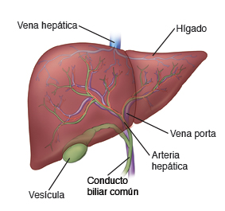

| Sistema Endocrino | |
|  | Secreta la bilis, que permite transportar desechos y descomponer grasas en el intestino delgado durante la digestión. Fabrica ciertas proteínas para el plasma sanguíneo. Produce colesterol y proteínas especiales que permiten enviar grasas por todo el cuerpo. Equilibra y fabrica glucosa a medida que el cuerpo necesita. |